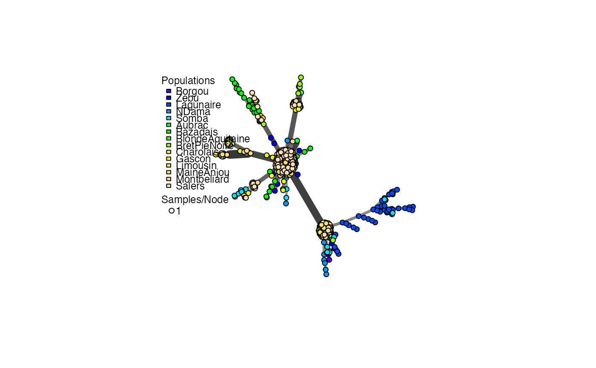

Create a minimum spanning network of selected populations using a distance matrix.
Source:R/visualizations.r
poppr.msn.RdCreate a minimum spanning network of selected populations using a distance matrix.
poppr.msn( gid, distmat, palette = topo.colors, mlg.compute = "original", sublist = "All", exclude = NULL, blacklist = NULL, vertex.label = "MLG", gscale = TRUE, glim = c(0, 0.8), gadj = 3, gweight = 1, wscale = TRUE, showplot = TRUE, include.ties = FALSE, threshold = NULL, clustering.algorithm = NULL, ... )
Arguments
| gid | |
|---|---|
| distmat | a distance matrix that has been derived from your data set. |
| palette | a |
| mlg.compute | if the multilocus genotypes are set to "custom" (see
|
| sublist | a |
| exclude | a |
| blacklist | DEPRECATED, use exclude. |
| vertex.label | a |
| gscale | "grey scale". If this is |
| glim | "grey limit". Two numbers between zero and one. They determine
the upper and lower limits for the |
| gadj | "grey adjust". a positive |
| gweight | "grey weight". an |
| wscale | "width scale". If this is |
| showplot | logical. If |
| include.ties | logical. If |
| threshold | numeric. By default, this is |
| clustering.algorithm | string. By default, this is |
| ... | any other arguments that could go into plot.igraph |
Value
a minimum spanning network with nodes corresponding to MLGs within the data set. Colors of the nodes represent population membership. Width and color of the edges represent distance.
a vector of the population names corresponding to the vertex colors
a vector of the hexadecimal representations of the colors used in the vertex colors
Details
The minimum spanning network generated by this function is generated
via igraph's minimum.spanning.tree. The resultant
graph produced can be plotted using igraph functions, or the entire object
can be plotted using the function plot_poppr_msn, which will
give the user a scale bar and the option to layout your data.
node sizes
The area of the nodes are representative of the number of samples. Because igraph scales nodes by radius, the node sizes in the graph are represented as the square root of the number of samples.
mlg.compute
Each node on the graph represents a different multilocus genotype.
The edges on the graph represent genetic distances that connect the
multilocus genotypes. In genclone objects, it is possible to set the
multilocus genotypes to a custom definition. This creates a problem for
clone correction, however, as it is very possible to define custom lineages
that are not monophyletic. When clone correction is performed on these
definitions, information is lost from the graph. To circumvent this, The
clone correction will be done via the computed multilocus genotypes, either
"original" or "contracted". This is specified in the mlg.compute
argument, above.
contracted multilocus genotypes
If your incoming data set is of the class genclone,
and it contains contracted multilocus genotypes, this function will retain
that information for creating the minimum spanning network. You can use the
arguments threshold and clustering.algorithm to change the
threshold or clustering algorithm used in the network. For example, if you
have a data set that has a threshold of 0.1 and you wish to have a minimum
spanning network without a threshold, you can simply add
threshold = 0.0, and no clustering will happen.
The threshold and clustering.algorithm arguments can also be
used to filter un-contracted data sets.
All filtering will use the distance matrix supplied in the argument
distmat.
Note
The edges of these graphs may cross each other if the graph becomes too large.
See also
plot_poppr_msn nancycats,
upgma, nj, nodelabels,
tab, missingno, bruvo.msn,
greycurve
Author
Javier F. Tabima, Zhian N. Kamvar, Jonah C. Brooks
Examples
# Load the data set and calculate the distance matrix for all individuals. data(Aeut) A.dist <- diss.dist(Aeut) # Graph it. A.msn <- poppr.msn(Aeut, A.dist, gadj = 15, vertex.label = NA)# Find the sizes of the nodes (number of individuals per MLL): igraph::vertex_attr(A.msn$graph, "size")^2#> [1] 2 1 2 2 1 1 1 1 1 1 1 1 1 1 1 1 1 1 1 9 1 1 5 1 1 #> [26] 2 1 1 1 1 2 3 1 1 2 1 1 1 2 1 1 1 1 1 1 2 1 2 1 1 #> [51] 1 2 1 3 1 1 1 1 1 2 1 1 1 2 1 1 1 1 1 1 1 1 1 2 1 #> [76] 2 1 1 10 1 1 1 1 1 1 1 1 1 1 2 5 2 2 1 2 1 5 2 2 3 #> [101] 1 4 1 1 2 1 1 1 1 2 3 1 2 2 1 1 2 1 4# \dontrun{ # Set subpopulation structure. Aeut.sub <- as.genclone(Aeut) setPop(Aeut.sub) <- ~Pop/Subpop#> Warning: Cannot set the population from an empty strata# Plot respective to the subpopulation structure As.msn <- poppr.msn(Aeut.sub, A.dist, gadj=15, vertex.label=NA)# Show only the structure of the Athena population. As.msn <- poppr.msn(Aeut.sub, A.dist, gadj=15, vertex.label=NA, sublist=1:10)# Let's look at the structure of the microbov data set library("igraph") data(microbov) micro.dist <- diss.dist(microbov, percent = TRUE) micro.msn <- poppr.msn(microbov, micro.dist, vertex.label=NA)# Let's plot it and show where individuals have < 15% of their genotypes # different. edge_weight <- E(micro.msn$graph)$weight edge_labels <- ifelse(edge_weight < 0.15, round(edge_weight, 3), NA) plot.igraph(micro.msn$graph, edge.label = edge_labels, vertex.size = 2, edge.label.color = "red")# }